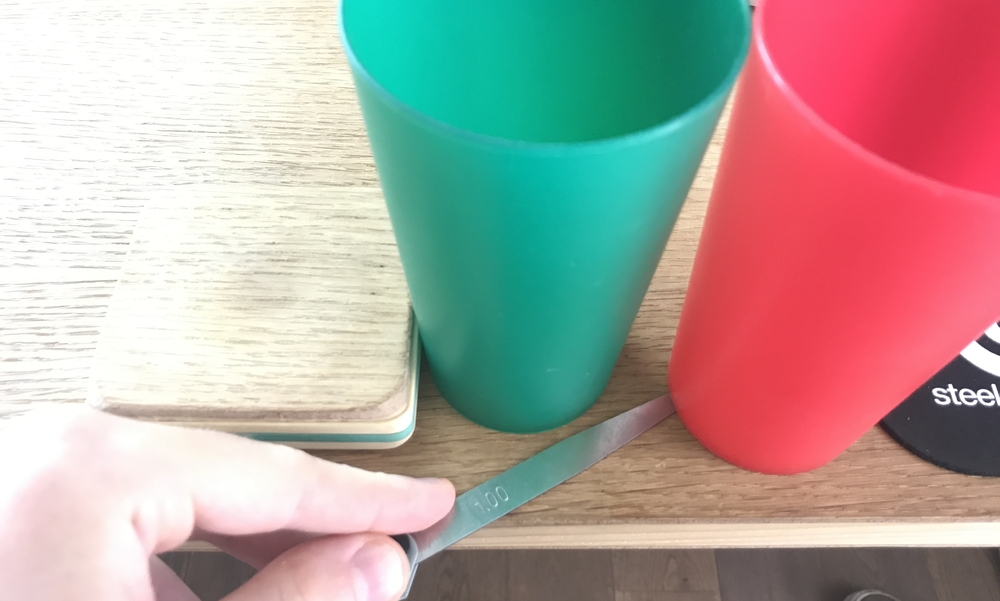

Préparez-vous à prendre le large ! En 2021, les robots partiront voguer à travers le monde.
Ils devront maîtriser l’art de la navigation afin d’arriver à bon port.
Les phares et les balises orienteront vos navires. Planifiez votre voyage et rapportez le récit de vos aventures.
Souquez ferme, moussaillons !
Vos missions seront :
Créer des chenaux pour rétablir la circulation maritime.
Relever les manches à air qui ont été balayées par la tempête.
Allumer le phare pour que les bateaux égarés puissent rentrer au port en toute sécurité.
Arriver à bon port, afin de mettre les robots au mouillage, à l’abri du vent, à la fin de leur voyage.
Hisser vos pavillons pour transmettre des messages aux autres navires.
NOTE 1: Exceptionnellement à cause du covid-19, le (quasi) même règlement de 2020 est rejoué en 2021. Peu d'équipes avaient pu participer en 2020.
NOTE 2: Ce compte rendu à été originalement publié sur le forum de Planète-Sciences le 1 Septembre 2021 (lien)
2.1. Introduction
En 2021 on a tenté le tout pour le tout: recommencer de zéro le robot pour le même thème "Sail the World", et même encore mieux, faire 2 robots !
La seule chose qu'on a gardé c'est le phare et encore il a eu le droit à une modification afin de l'activer plus facilement.
Comme d'habitude, la fabrication des robots à commencer pile poil un mois avant la coupe :D
L'électronique était pourtant faite plus de 5 mois avant la coupe, mais il manquait un peu de motivation et de temps pour terminer la CAO on va dire.
des moteurs de très bonne qualité Faulhaber et une odométrie beaucoup plus fiable
des actionneurs qui prévoient beaucoup plus de marge d'erreur de positionnement du robot
des roues encore plus grosses qui adhèrent encore plus
un linux embarqué qui fait du traitement vidéo
Une raspberry pi 4, un shield CAN, une camera et quelques lignes de python plus tard, hop l'orientation de la girouette est faite!
Le linux gère aussi le lidar par USB.
un système enfin fiable de détection des robots par lidar
détection des mines prévues à certains endroits
Dans le petit port, il arrivait qu'une bouée aléatoire fasse son apparition ou qu'on en décale une.
On pouvait alors activer ou non une prévision de mine lors qu'on s'approchait des bordures du terrain et ainsi passer à l'étape suivante de la dépose pour éviter des blocages.
Les cartes électroniques moins modulaire
On est repassé sur une bonne grosse carte centrale qui regroupe tous les actionneurs/capteurs (io_board), comparé à 2020 où on avait 2 cartes pour chaque bras, 2 cartes pour chaque groupe de 6 pompes.
On avait beaucoup moins de fils d'alim entre chaque carte, moins de nappe entre chaque carte pour le bus CAN, moins de composants en général.
des insert dans quasi toutes les pièces 3D
Fini les écrous qu'il faut placer à la main et qui tombent en plein milieu du robot quand il faut démonter une pièce.
On utilise principalement des inserts M3 pour toutes les pièces et des inserts M5 pour le bloc moteurs.
époustouflant les moteurs Faulhaber avec une bonne odométrie (lien youtube)
2.5. Les imprévus/difficultés
une journée de galère avec les encodeurs à effet hall
Lors des premiers tests du petit robot, on avait l'odométrie qui "sautait" d'un coup de manière très aléatoire.
Après de longues investigations et grâce à la lecture de l'intensité du champ magnétique sur les encodeurs, on s'est aperçu que l'intensité était beaucoup trop faible.
On a d'abord pensé à des aimants ou des encodeurs défectueux, mais il s'est avéré que le champ magnétique était absorbé par le roulement à bille de la roue odo.
En effet on n’a pas utilisé exactement les mêmes roulements à billes entre le gros robot et le petit (surement un alliage acier plus ferromagnétique qui a fait cette grosse différence ?).
La solution à été de changer d'aimant de 8mm de diamètre vers des 6mm de diamètre, son champ magnétique étant moins fort il n’atteignais pas les roulements à bille et n'était donc plus absorbé !
un asservissement polaire pas encore nickel/chrome
Coder une partie aussi vitale 15 jours avant la coupe ce n''était pas sans risque.
Il arrive qu'il fasse une rotation de 90deg ou 180deg dans le mauvais sens, se rend compte que ce n'est pas la bonne direction et corrige vers la bonne direction.
Encore pire, si le robot était un peu décalé et qu'il avait une consigne qui le faisait rentrer le mur, il se bloque sans atteindre sa consigne.
(C'est bien sûr arrivé qu'une seule fois pendant un match et nous pas réussit à reproduire même avec plus de 20 essais)
(lien youtube)
les roues en silicone qui ramassent trop de poussière
On pense que ça vient du moule en impression 3D qui laisse l'empreinte des couches 3D sous forme de mini stries sur la surface de la roue et que la poussière vient se loger dedans.
On a pas spécialement aidé en ne nettoyant pas trop la table et en faisant rouler le robot par terre.
les roues en silicone qui se sont détendus lors de blocage du robot contre un mur et les roues en impression 3D ont fondu au niveau de l'arbre du moteur
Happy ending, c'est les roues/pneu qui ont fondu et pas le terrain :D
(lien youtube)
les gobelets qu'on a utilisés lors de notre préparation n'avaient pas la surface en vinyle en dessous
Lors des matchs à la coupe, on a eu une grande surprise, il arrivait régulièrement que lors de la dépose des gobelets dans le grand port, ils n'avaient pas leurs surface de dessous parfaitement en contact avec le sol (environ 1mm), les points n'étaient donc pas validé par les arbitres.
Le vinyle sous les gobelets adhéraient beaucoup plus que seulement le dessous du gobelets à nu.
Les jauges ne mentent pas, il y avait vraiment au max 1mm
la tirette de démarrage qui reste bloqué dans le robot
et qui le fait décoller au début d'un match! Heureusement c'est arrivé qu'une seule fois.
(lien youtube)
la carte de débogage (debug_board) qui n'a jamais fonctionné
Cette carte devait être un programmateur/débogueur central des cartes, l'idée c'était que sa soit une sorte de ST-LINK relié au SWD des 4 cartes qui ont un STM32.
Un gros commutateur rotatif devait permettre de sélectionner la carte à déboguer et un gros USB type-B devait sortir sur le toit du robot qui lui devait être le ST-LINK.
Pour le ST-LINK on l'a dessoudé d'une nucleo64 et placé sur la debug_board, mais la communication USB n'a jamais fonctionné.
On n'a pas de réponse au pourquoi ça n’a pas fonctionné, mais sur le schématique officiel du ST-LINK ils utilisent un USB mini B (contre seulement un type B pour nous).
On n'a également pas placé le transistor commandé par USB_RENUM et qui va sur le D+, et on n'a pas de pin ID relié avec 100k à GND sur l'USB type B.
des gobelets qui n'auraient pas du se trouver dans la zone de départ
En 8ème de finale lors du match contre RCT, ils avaient une botte secrète plutôt inattendu: une turbine cachée dans le robot qui permet de pousser des gobelets.
Et hop en moins de 2 secondes, une mine dans notre zone de départ, mais "c'était pour nous aider avec une mine répétable et pas aléatoire au lieu de juste foncer dedans" :(
Le système anti-mines n'a pas pu nous sauver, on ne peut pas retirer les mines dans les coins..
(lien youtube)
C'était encore une fois une super coupe, des beaux robots, une orga tip top comme d'habitude 8)
On est hyper content d'arriver à égaler notre dernière performance de 2020, avec plus d'équipes cette fois
Très content aussi du 2ème plus haut score de la coupe ! (169 max RCVA, 166 max VRAC, 165 max A.I.G.R.I.S.)
On a bien sûr eu une légère amertume des 8ème de finale, mais vite apaisé par les matchs amicaux qui s'en sont suivis après les finales :D
{kind=link}
{kind=link}
{kind=link}
{kind=link}
{kind=link}
{kind=link}
{kind=link}
{kind=link}
{kind=link}
{kind=link}
{kind=link}
{kind=link}
{kind=link}
{kind=link}
{kind=link}
{kind=link}
{kind=link}
{kind=link}
{kind=link}
{kind=link}
{kind=link}
{kind=link}
{kind=link}
{kind=link}
{kind=link}
{kind=link}
{kind=link}
{kind=link}
{kind=link}
{kind=link}
{kind=link}
{kind=link}
{kind=link}
{kind=link}
{kind=link}
{kind=link}
{kind=link}